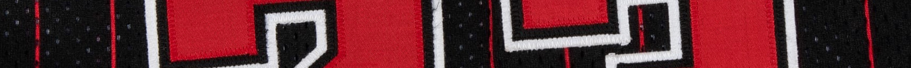

1997–98
Season Total
53
Game Worn Total
53
Publicly Documented (POP)
5
Verified Non-Public (POP)
NA
AUDIT IN PROGRESS
Population Summary
| Style | Confirmed | Public | Audit |
|---|---|---|---|
| Home | 4 | 4 | ⏳ |
| Away | 1 | 1 | ⏳ |
| Alternate (Black) | 1 | 1 | ⏳ |
Archival Designation System
Each jersey is assigned a permanent archival designation (A, B, C, etc.). These identifiers represent distinct documented physical garments and remain fixed across preseason, regular season, postseason, and style-year transitions. The designation tracks the garment itself rather than a specific season or chronological sequence.

HOME

AWAY
